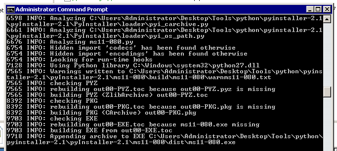

11.2.3
1. 
2. 
3. The following are examples (stolen from :https://blog.netspi.com/windows-privilege-escalation-part-1-local-administrator-privileges/)- Clear Text Passwords Stored in Files
- Clear Text Passwords Stored in the Registry:
- Write Access to the System32 Directory:
- Write Access to the All Users Startup Folder
- Insecurely Registered Executables:
- Windows Services Running as SYSTEM
- Weak Application Configurations
- Windows At Command:
- Install a User-Defined Service
- Install a User-Defined Service
12.2.3
1.


2. the host is listening on 4444, but the windows firewall is blocking inbound connections..... but if you use a reverse shell, the victim machine makes an outbound connection, so the inbound firewall doesn't block the connection.

12.3.1
1.

2. You can change various pieces of the display so that user's will associate what they see with 'good gut feelings', therefore will trust it.

13.2.3
1. 
2. you could imbed a link to the java.html from the previous session (or any malicious code), from which the user's could/would run from their browser, which might give you additional entry points to hosts.
3. It can actually do both.. Its specifically giving you access to browser data (for further exploitaton of hosts), and possibly admin panels (in this case), but with further exploitation you can gain access to further hosts.
13.3.1.3
1. 
2.

13.3.2.1
1.

13.4.1.1
1.

2.

3. Because its printing back out to the screen the $_SESSION['user'] that it created when i entered the info in the username filed originally.
13.4.5.1
1.

2.You are inserting additional commands in the text fields, that SQL is happily processing on the backend....
3.

13.4.6.1
1. 
2.


13.5.1
1.

2.

the follow same process as 13.4.6.1
13.6.1
1.

2.

3.

4.
14.1.5
1.

2.

14.2.3
1.
2. ftp and SSH tend to be faster than RDP
3. okay... :)
14.3..6
1.

root@kali:~/gen/password# for ips in $(cat ftpips.txt); do hydra -t 1 -l ftp -P /root/gen/password/johnpassword.txt -vV $ips ftp;done
2.

15.5.1
1.


16.4.3
1.

2.


16.5.1
1. 
2.